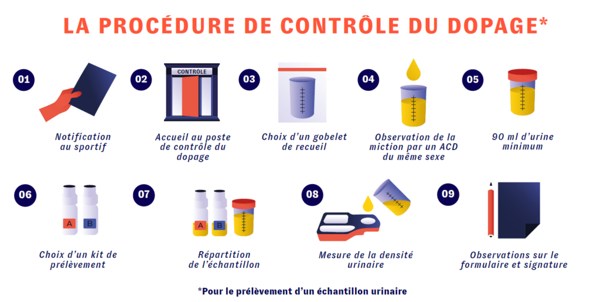

PRO-CYCLEAN · MODE INDIVIDUEL
La mission contrôle
Découvre les principales étapes d’un contrôle antidopage urinaire.
Phase individuelle
Construis la procédure
Fais glisser les neuf cartes de la banque vers les emplacements, dans l’ordre qui te paraît correct.
Classement
Les étapes du contrôle
0 / 9
Ton plateau
Banque des étapes
Fais glisser chaque carte vers la place de ton choix.
Correction
Découvre la procédure correcte
La procédure complète
Activité terminée
Merci pour ta participation !

Touche l’image pour l’ouvrir en grand.